Dalbyover
Höhe ü. d. Erdboden: 114 cm
Größte Breite: 64 cm
Dicke unten: zw. 30 - 56 cm
Runenhöhe: 11 / 12 / 15 cm
Runeninschrift :
Tofi, kitu Sohn, setzte (diesen Stein für...) seinen Genossen, Thorgnys Pflegesohn.
46 - Dalbyover - Letztes Update 09.09.2025
Listennummer : DR 125 / DK MJy 46
| Navidaten: 56.61975 10.19516 oder: Tinghøjvej 8A, 8970 Havndal |
Transliteration: tufi : kitu : sun : sati : ... | ...i : filaka : sin : | fustra : þurknus
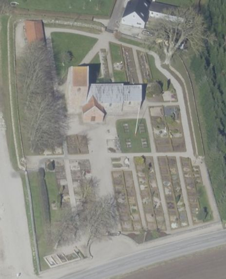
Das ist ein Luftfoto vom 01.04.2023 von Skråfoto das die Kirche von Dalbyover zeigt. Skråfoto ist eine Webanwendung, die von Klimadatastyrelsen weltweit kostenlos bereitgestellt wird - Freie Nutzung unter Beachtung der Lizenz: CC BY 4.0. Die Aufnahmen werden alle zwei Jahre erneuert und neben einer Senkrechtaufnahme wird ein Schrägbild aus jeder Himmelsrichtung angeboten, das man über eine Adresssuche aufrufen kann.
Der Runenstein wurde im Mai 1882 vom Gutsverwalter Einar Sehested (*23.04.1849 - 11.04.1908, Jægermester - link-LIVES)
 Bildquelle:
Fotografie -
1886 von Fotograf Lars Dinesen
-
Det Kgl. Biblioteks billedsamling
-
Lizenz:
Public Domain
Bildquelle:
Fotografie -
1886 von Fotograf Lars Dinesen
-
Det Kgl. Biblioteks billedsamling
-
Lizenz:
Public Domain
vom Gutshof Trudsholm (ca. 5 km nordwestlich gelegen)
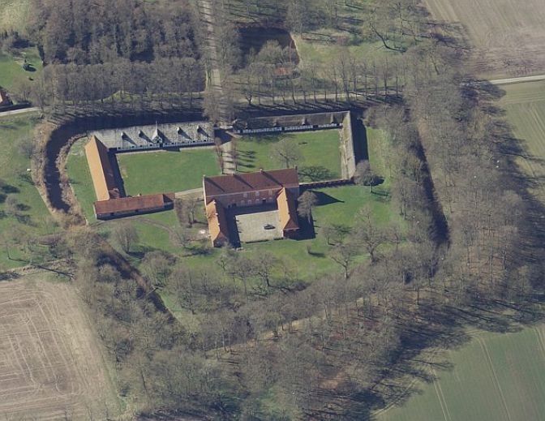
Bildquelle: Skraafoto - Lizenz: CC BY 4.0an der östlichen Innenseite der Kirchhofeinfriedung von Dalbyover entdeckt. Er hat dazu einen zweiseitigen Bericht mit einer ganz einfachen Skizze, datiert auf den 21.05.1882, nach Kopenhagen an das Nationalarchiv - heute: Antikvarisk -Topografisk Arkiv - gesandt.


Im Antikvarisk -Topografisk Arkiv haben sich weitere Aufzeichnungen zu der Entdeckung des Runensteins erhalten. Dieser mehrseitige Brief von Justizrat Frants Hvass (*01.10.1824 - 12.12.1890, Mitglied der Jütländischen Historisch-Topographischen Gesellschaft aus Fredriksdal bei Randers - link-LIVES) - Bestattungsprotokoll
 Bildquelle:
https://slaegtsbibliotek.dk/911086.pdf - Seite 6 -
Bildquelle:
https://slaegtsbibliotek.dk/911086.pdf - Seite 6 -
datiert auf den 05. Juni 1882. Der Bericht selbst ist auf den 24. Mai 1882 datiert.


Die Zeichnung, die ich hier leicht bearbeitet und zugeschnitten habe, ist von Frants Hvass auf den 23.Mai 1882 datiert.

Außerdem findet sich im Archiv noch ein von Carl Nicolai Henry Petersen (*20.03.1849 - 21.09.1896, dänischer Archäologe, 1879 im Nationalmuseum angestellt, ab 1892 als Leiter der Mittelalterabteilung - link-LIVES), der nach der Anmeldung des Runensteinsfunds offenbar vor Ort entsandt wurde,
 Bildquelle:
Wikipedia - Lizenz:
Public Domain
Bildquelle:
Wikipedia - Lizenz:
Public Domain
verfasste am 29.05.1882 bei einem Aufenthalt auf dem Gutshof Trudsholm noch diesen zweiseitigen Bericht mit einer guten Zeichnung.


Diese Unterlagen von Einar Sehested, Frants Hvass und von Henry Petersen wurden mir auf Anforderung beim Antikvarisk -Topografisk Arkiv in Kopenhagen herausgesucht, abfotografiert und am 19.02.2025 per E-Mail übermittelt - Tusind tak Dánial!
Der Stein wurde nach seiner Entdeckung herausgenommen und erst jetzt sah man, dass ein größeres Stück von der Steinspitze abgebrochen war. Hierdurch fehlt ein Teil der Inschrift. Unten ist ebenfalls etwas vom Stein abgeschlagen. Er befindet sich heute im Waffenhaus der Kirche von Dalbyover, wo er teilweise im Fußboden eingelassen, aufgestellt wurde. Die Runenzeichen wurden mit roter Farbe hervorgehoben.
Erst im Jahre 1989 wurde der Stein gedreht und im Erdboden eingelassen. Dies geschah wohl auf Initiative der Runologin Marie Stoklund (*11.08.1934 - 03.09.2021, Runologin am dänischen Nationalmuseum) vom Nationalmuseum in Kopenhagen.
Die Inschrift verläuft in drei senkrechten Runenbändern. Sie beginnt in dem linken Band von unten nach oben, wird in dem rechten Band von oben nach unten fortgesetzt und endet im mittleren Band von unten nach oben gelesen. Sie wird von den Runologen in die Zeit von 970 - 1020 datiert.
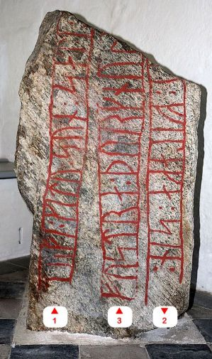
Die Kirche von Dalbyover nit ihrem Runenstein habe ich erstmals am Samstag, 17.08.1991 besucht. Danach war ich noch mehrmals vor Ort, so auch am Sonntag, 02.07.2000 (Graver kam auf Anruf vor Ort und öffnete die Kirche für mich - Tusind Tak!).
Auf meiner Tour am Freitag, 26.08.2016, konnte ich die Dalbyover Kirche dann wieder offen antreffen und diese Fotos fertigen:
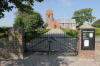 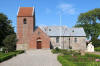 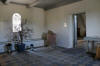 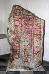 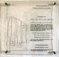 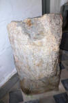 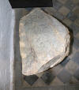 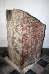 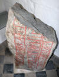 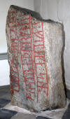


Zuletzt war ich im Rahmen meiner 2022er Jütland Wikinger Tour am Donnerstag, 16.06.2022 in Dalbyover. Dabei traf ich eine geöffnete Kirche an und konnte ich diese Fotos anfertigen.
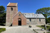 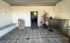 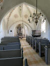 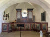 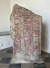 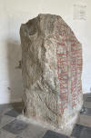 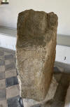 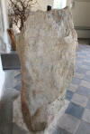 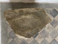


In dem Runenwerk von Prof. Ludv. F. A. Wimmer (*07.02.1839 - 29.04.1920, Philologe und Runenforscher - link-LIVES - Politiets registerblade - Bestattungsprotokoll)
 Bildquelle:
Fotografie zw. 1877-1900 von Fotograf Hansen & Weller
-
Det Kgl. Biblioteks billedsamling - Lizenz:
Public Domain
Bildquelle:
Fotografie zw. 1877-1900 von Fotograf Hansen & Weller
-
Det Kgl. Biblioteks billedsamling - Lizenz:
Public Domain
De danske runemindesmærker undersøgte og tolkede af Ludv. F. A. Wimmer, Andet Bind, Runestenene i Jylland og på øerne. 1899-1901 - Nr. 23, S. 139ff. findet sich diese Zeichnung von Prof. Julius Magnus Petersen (siehe unten), die ich hier wiedergeben möchte - eigener Scan aus der in meinem Besitz befinlichen Ausgabe. Wimmer hat den Runenstein persönlich vor Ort am 19. Juli 1882 untersucht.
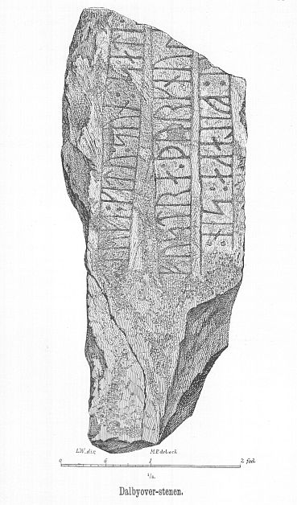
Ludv. F. A. Wimmer hat seine jahrelangen Aufzeichnungen der "Kgl. Bibliotek" in Kopenhagen überlassen. Ein Verzeichnis darüber wurde 1915 in Buchform herausgegeben - "Collectio runologica Wimmeriana: Fortegnelse over Ludv. F. A. Wimmers runologiske o. a. Samlinger i Det kgl. Bibliotek"
In seinen Unterlagen in der Königlichen Bibliothek in Kopenhagen findet sich unter "III - Originaltegninger af de danske Runemindesmærker, udførte paa Undersøgelsesrejserne af Magn. Petersen og kontrollerede paa Stedet af Ludv. Wimmer, samt Prøvetryk af de paa Grundlag af de nævnte Tegninger, Aftryk o. s. v. til De danske Runemindesmærker" udførte Afbildninger med Wimmers Rettelser" unter der Nummer 37 diese Zeichnung von Magnus Petersen, die er auf "Juli 1882" datiert hat. Oben rechts hat er noch den Steinquerschnitt mit alten dänischen Maßangaben notiert.


Da Wimmer in seinem Runenwerk angibt, dass er den Runenstein am 19. Juli 1882 vor Ort in Augenschein genmommen hat, stammt diese auf "Juli 1882" datierte Zeichnung von Prof. Julius Magnus Petersen (*04.09.1827 - 31.01.1917, Archäologischer Zeichner und Restaurator - link-LIVES - Bestattungsprotokoll)
 Bildquelle: Fotografie
von 1903 von Fotograf Marius Christensen
(*24.06.1874 -
25.06.1907) -
Det Kgl. Biblioteks billedsamling - Lizenz:
Public Domain
Bildquelle: Fotografie
von 1903 von Fotograf Marius Christensen
(*24.06.1874 -
25.06.1907) -
Det Kgl. Biblioteks billedsamling - Lizenz:
Public Domain
auch vom 19. Juli 1882, da die beiden Herren eigentlich immer zusammen unterwegs waren.
Erik Moltke (*04.04.1901 - 19.10.1984, Runologe, Historiker)
 Bildquelle: Scan von Buchumschlag "Runerne i Danmark og ders
oprindelse" - Erik Moltke - 1976 - Lizenz:
CC-BY-SA
Bildquelle: Scan von Buchumschlag "Runerne i Danmark og ders
oprindelse" - Erik Moltke - 1976 - Lizenz:
CC-BY-SA
hat diese sw Aufnahmen am 31.07.1930 gefertigt.
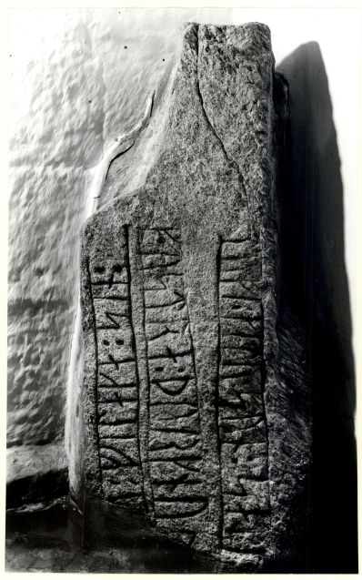
Quelle: Digitale Sammlung des Nationalmuseums in Kopenhagen - Lizenz: CC-BY-SA
Marie Stoklund (*11.08.1934 - 03.09.2021, Runologin am dänischen Nationalmuseum) hat dieses Foto im Jahr 1989 aufgenommen.
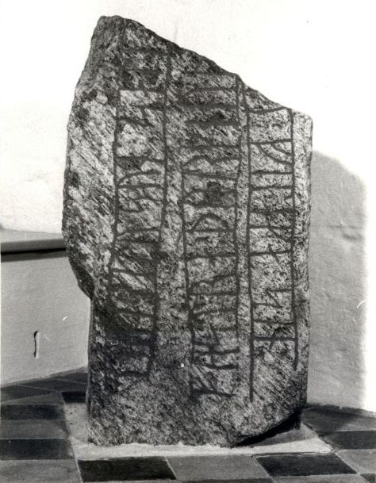
Quelle: Digitale Sammlung des Nationalmuseums in Kopenhagen - Lizenz: CC-BY-SA
Im Vorfeld zu dem 2016 erschienenen Buch von Lisbeth M. Imer (*1973, Runologin am Nationalmuseum Kopenhagen) "Danmarks Runesten - en fortælling" reiste sie mit dem Fotografen Roberto Fortuna zur Bestandsaufnahme durch die Lande. Dieser hat die Runensteine mit Schräglicht aufgenommen und darüber wirklich herausragende Fotos erzielt. Diese Fotografien stammen vom 22. März 2012.
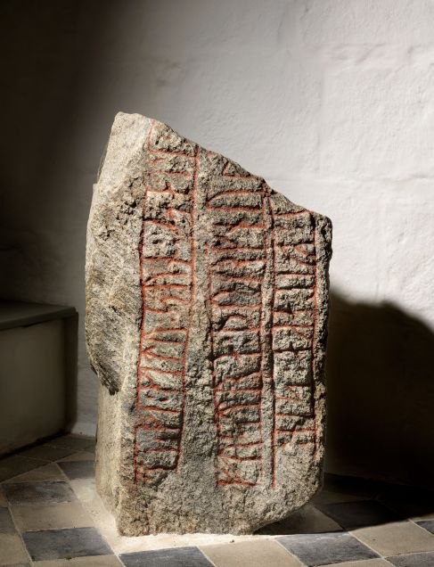
Quelle: Digitale Sammlung des Nationalmuseums in Kopenhagen - Lizenz: CC-BY-SA
Den Eintrag zu diesem Runenstein aus der dänischen Runen Datenbank im Internet kann man hier abrufen.
Die Informationen in "Fund og Fortidsminder" zu dem Runenstein finden sich hier. Darin ist inzwischen dieser Zustandsbericht des Steinrestaurators Leif Vognsen aus dem Jahr 2018 eingebettet.
Über diesen Link finden sich zu dem Runenstein Informationen des Forschungsprojektes "Runes" der Akademie der Wissenschaften zu Göttingen.
Auf der Webseite Danmarks Fortidsminder findet man ebenfalls Informationen zu diesem Runenstein.